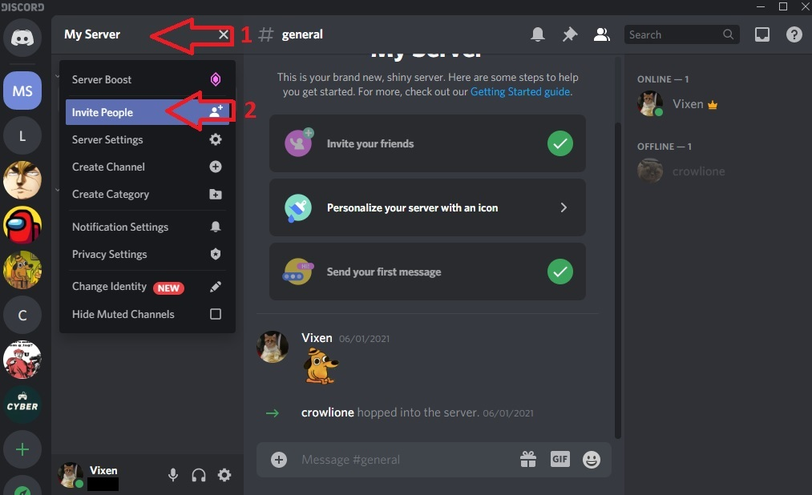
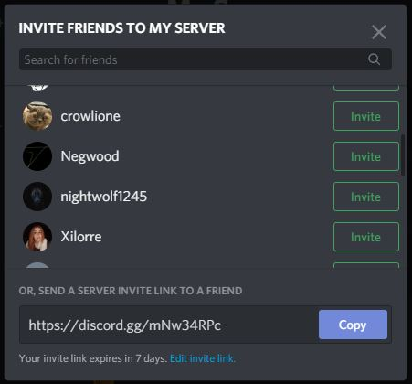

How to Add People in a Server
Here you will learn how to add people to your server.
To be able to add people to your server, first you must have your own server.
When you add people to your server you make communication between you guys easier.
- Click on the server name in the top left of the application.
- Select Invite People. 
- Copy the auto-generated link you are given and send it to your friends. 